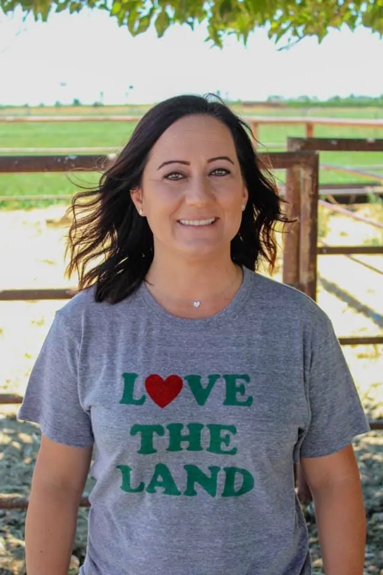
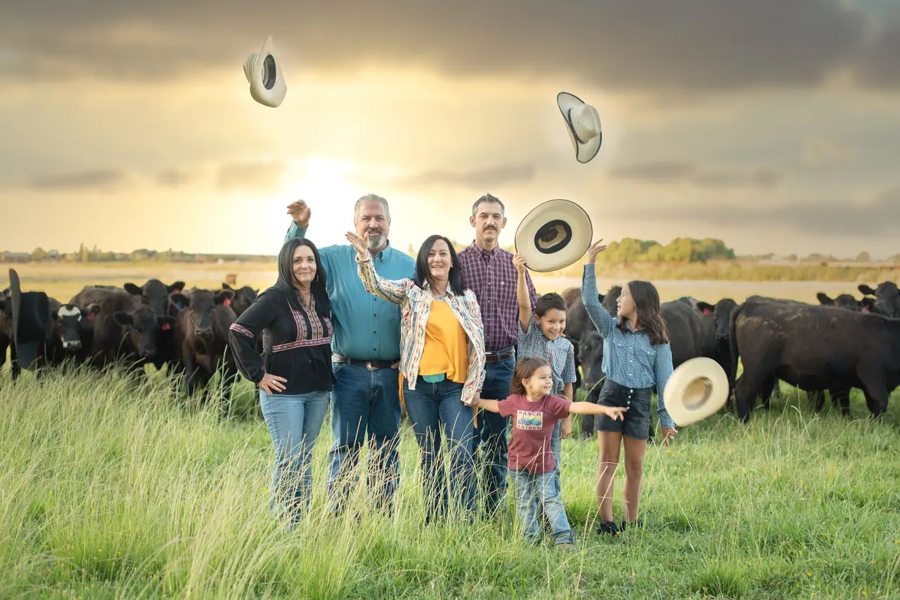
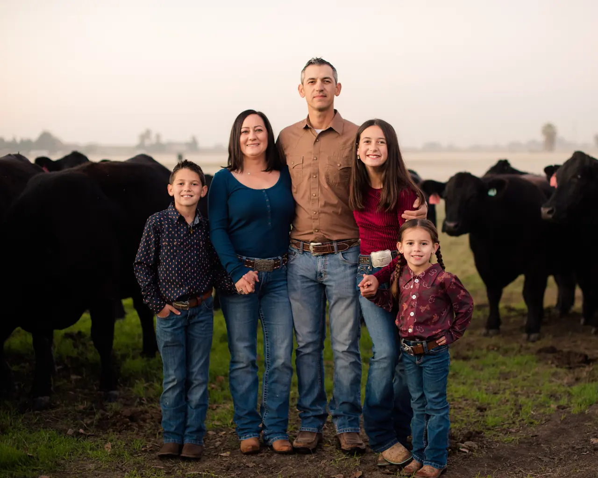

Our Story
A dairyman's son and a rancher's daughter.
Michael and Rosie Silva grew up in the same small Central Valley town, on farms, a few miles apart. They went to the same schools and never once spoke.

They finally met when Rosie came home from college and sold Michael a collie pup he didn't really need.
Their shared love of agriculture was an instant bond. They married, settled in their hometown, and now own and manage a farming operation and cattle ranch together, based in Tracy.
They're raising three children here, teaching them to value natural resources, hard work, and family tradition.

In Rosie's words
How it all started.
Behind every rancher is a story — the story of their dream. This ranch woman's dream started while I was growing up feeding on a family dairy heifer replacement operation. I developed my love for cattle very young, working alongside my father in the Central Valley and the Coastal Range.
As I grew, I made it a goal to own and operate my own dairy replacement facility. I graduated from Cal Poly with a B.S. in Dairy Science and a minor in Water Science. My parents gifted me a Holstein heifer for graduation, and I felt inspired to follow my childhood dream. I raised her, sold her as a springer, and used the money to buy three heifers. Each year I worked hard and kept rolling and building the herd.
I learned fast out of college that being a five-foot-nothing girl in agriculture meant a lot of no's. But I was willing to fight for my passion and work other jobs at the same time to pay the bills.
Things were finally coming together. I made a partnership with an investor and rented irrigated pasture right next door to our home. Finally, an operation that felt good.
Then in 2013 dairies in our region started going out of business rapidly. My husband and I made the difficult decision to sell our springers and save up to purchase a beef herd when the time was right, which meant putting my dream on hold. We fed other people's beef cattle in trade for stock to start our own herd — and then we lost the lease on the pasture next to our house.
After some convincing, we got my Dad to agree to let us run our cattle with his while we built up our beef herd. That gave us the room to grow our Spring and Fall calving herds. We now have enough cattle to graze hillsides in Alameda and Contra Costa Counties, plus several irrigated pastures in San Joaquin County.
Now I'm living a dream better than I imagined — raising beef cattle with my own family and selling quality beef directly to local families like yours. Our connection to the land and our community is linked by our cattle. What more could I dream of?
RosieRancher, mom, farmer's wife
Why buy from us
We're a family growing food for families.
Raised right
Every animal is handled humanely in a low-stress environment. We hold ourselves to the standards US beef producers set for animal health, and we don't accept less.
No added hormones
We choose never to use added hormones on our ranch. That's our own practice, not a third-party certification.
Built genetics
We've put years into our herd through selective breeding, specifically to give local families high-quality beef.
Dry-aged
Fourteen to twenty-eight days in a temperature-controlled cooler, which is what makes it tender and gives it that concentrated flavor.
Local money stays local
When you buy from us you're supporting our family, the family-owned mobile butcher, the family-owned butcher shop, and other local businesses down the line.
Grazing that gives back
Our main hillside landlords are a Contra Costa County family whose land has been theirs since 1898. Our grazing keeps the vegetation managed, supports wildlife habitat, and helps their local ecosystem.
The Silva family


“My family is grateful to you and your family for all that you do to provide us with amazing food that we share and enjoy all year long.”The Cotroneo Family, beef customer
Come be part of it.
Placing an order with Silva Ranch is a direct link to your rancher. Rosie will walk you through the whole thing.